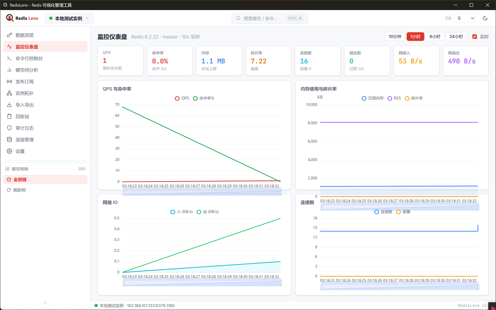

监控仪表盘
监控仪表盘对已打开的连接周期读取 INFO，把累计计数器换算成速率，
并以指标卡与曲线展示。它适合快速判断「现在是否正常」，而不是替代 Prometheus
这类长期时序监控。

采样机制
- 连接打开成功后自动启动采样；默认每 10 秒一次，可在设置中调整为 1 – 60 秒。
- 每帧读取
INFO与DBSIZE，用相邻两帧累计值做差分，计算 QPS、命中率、网络速率等。 - 采样数据保存在内存环形缓冲区，最多 8640 帧（默认间隔下约 24 小时）。
- 关闭连接或退出应用后历史清空；应用不落盘监控数据。
- 修改采样间隔会热更新到所有已打开连接，从下一个周期开始生效。
第一帧没有速率
首帧只有累计值，没有可比较的上一帧，因此 QPS / 网络速率显示为 0 或空，
命中率按累计命中数计算。等第二帧到达后曲线才会开始变化。
集群模式看到的是单个节点
INFO 在集群客户端上通常路由到其中一个节点，仪表盘展示的是该节点的进程指标，
不是全集群聚合。需要逐节点观测时，请为各节点分别建立单机连接，
或在控制台对目标节点执行 INFO。
指标卡
| 指标 | 含义 | 数据来源 / 计算 |
|---|---|---|
| QPS | 每秒处理的命令数。 | total_commands_processed 两帧差值 ÷ 时间差。 |
| 命中率 | 键查找命中的比例；低于 50% 显示红色，50% – 80% 琥珀色，≥ 80% 绿色。 | keyspace_hits / (keyspace_hits + keyspace_misses)。 |
| 内存 | 已用内存；副标题显示 maxmemory 上限或「未设上限」。 |
used_memory、maxmemory。 |
| 碎片率 | used_memory_rss / used_memory；大于 1.5 标记「偏高」。 |
mem_fragmentation_ratio。 |
| 连接数 | 当前客户端连接数，副标题为阻塞客户端数。 | connected_clients、blocked_clients。 |
| 键总数 | 当前 DB 的键数量；副标题显示每秒过期键数。 | DBSIZE、expired_keys 差值。 |
| 网络入 / 出 | 每秒进入 / 离开 Redis 的字节数，自动格式化为 KB/s、MB/s。 | total_net_input_bytes、total_net_output_bytes 差值。 |
图表
QPS 与命中率
双指标折线。QPS 以红色显示，命中率以绿色百分比显示；用于观察流量突增或缓存失效。
内存使用与碎片率
已用内存、RSS 与碎片率三条线；RSS 明显高于已用内存通常意味着碎片或分配器行为异常。
网络 IO
入站与出站速率（KB/s）。出站持续高于入站是读多写少的典型形态。
连接数
连接数与阻塞连接数的阶梯线；阻塞数上升通常意味着有阻塞命令或慢操作。
时间窗口与交互
- 顶部提供 10 分钟 / 1 小时 / 6 小时 / 24 小时 四个窗口，切换后重新读取该窗口内的历史帧。
- 「实时」开关打开时，新采样会持续追加到当前窗口；关闭后曲线冻结，便于对照。
- 图表支持鼠标滚轮 / 拖拽框选缩放，底部滑块可平移；切换时间窗口可恢复默认范围。
- 切换浅色 / 深色主题时图表会重建配色，不需要刷新页面。
- 窗口大小随浏览器窗口自适应。
看不到 24 小时数据？
历史只能回看「连接打开后已经采集到的部分」。刚打开连接时，24 小时窗口里也只有最近几分钟的点；
持续运行足够久才会填满。应用重启或断开连接会清空历史。
另外，实时模式使用前端缓冲，长时间运行时更早的点会逐步被淘汰；
需要回看更早数据时，可关闭「实时」后重新选择时间窗口，从后端缓冲区重新加载。
使用建议
- 先看趋势，再看绝对值：QPS、命中率、内存的突变比单点数值更有诊断价值。
- 采样间隔不要过小：1 秒采样会给实例和客户端带来额外
INFO/DBSIZE开销，生产环境建议 10 秒或更长。 - 命中率低不等于实例异常：大量写入、
SCAN、失效刷新都会拉低命中率，需要结合业务判断。 - 内存告警看上限：只有配置了
maxmemory时，「内存」卡片才会显示上限；未设上限时 Redis 可能被系统 OOM 终止。 - 需要长期留存：请使用外部监控系统；RedisLens 只保留进程内最近数据。